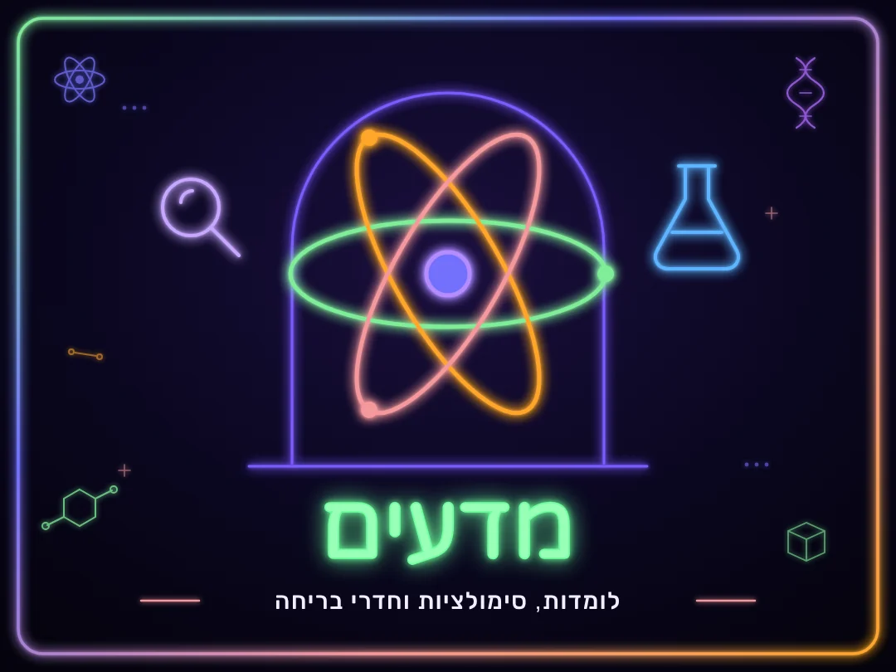
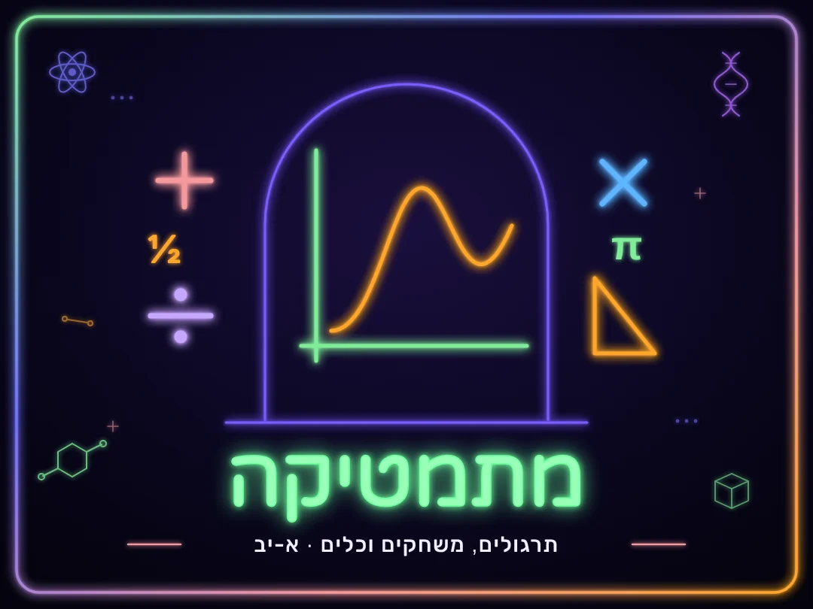
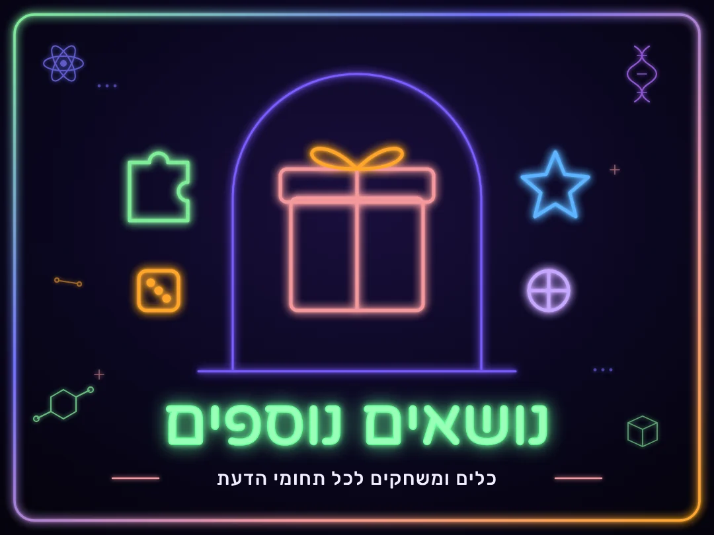

מתנה ממני · ללא עלות
בחרו תחום - שחקו, חקרו וגלו
משחקים, סימולציות, חדרי בריחה ולומדות אינטראקטיביות שפיתחתי - כולם כאן במתנה, ללא עלות. בוחרים תחום, נכנסים, והלמידה הופכת לחוויה.
4תחומי דעת
60+כלים ופעילויות
0 ₪הכול במתנה
בחרו תחום
4 תחומים · לחיצה פותחת את העמוד
מדע וטכנולוגיה
תרגולים חווייתיים במדעים
לומדות, סימולציות, חדרי בריחה ומצגות אינטראקטיביות במדע וטכנולוגיה.
←לכל הכלים במדעים01
מתמטיקה
תרגולים חווייתיים במתמטיקה
משחקים, יחידות לימוד, בוטיות וסימולטורים - מהיסודי ועד התיכון.
←לכל הכלים במתמטיקה02
שפה
תרגולים חווייתיים בשפה
אוצר מילים, שורשים ומשפחות מילים, חדר בריחה בעקבות שיר ועוד.
←לכל הכלים בשפה03
לכל תחומי הדעת
כללי + חגים ומועדים
פעילויות לחגים ולמועדים, חדרי בריחה, מחוללי משחקים וכלים לכל מקצוע.
←לכל הכלים04